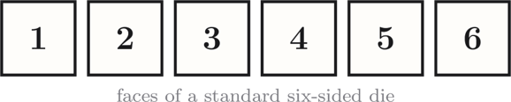
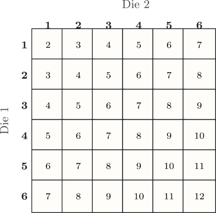
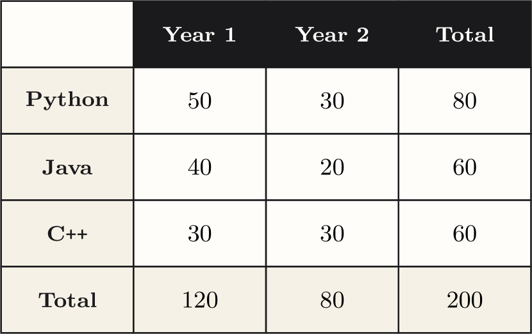
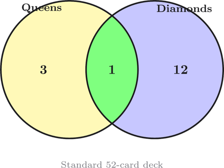
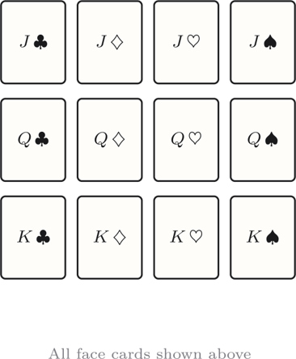
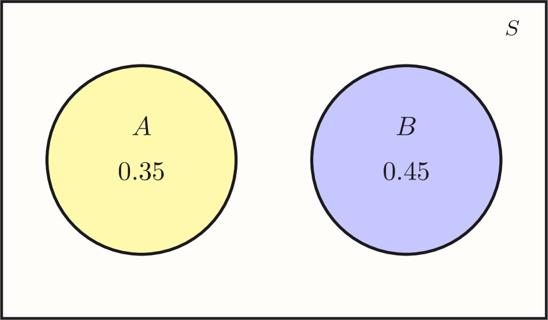

Probability Protocol
Nine challenges built around the foundations of probability — classical probability, joint and marginal distributions, conditional probability, and independence. Drawn from Weeks 2-3 of the unit.
Warm-up calculations
10 points eachEven Money
A fair six-sided die is rolled once. What is the probability of rolling an even number?

Suit Up
One card is drawn at random from a standard 52-card deck. What is the probability that it is a Club?
Fail-Safe
The probability that a student passes a quiz is $P(\text{pass}) = 0.7$. What is the probability that the student fails?
Two-step thinking
20 points eachTake Five
Two fair dice are rolled. What is the probability that their sum equals 5? Give your answer as a fraction or decimal.

Marginal Notes
200 first-year students were surveyed about their preferred programming language and year level. The counts are shown below.

Use the two-way table in the diagram to find the marginal probability $P(\text{Python})$ — the probability a randomly chosen student prefers Python, regardless of year level. Give your answer as a decimal.
Queen of Diamonds
One card is drawn from a standard 52-card deck. Use the Venn diagram below to find $P(\text{Queen} \cup \text{Diamond})$ — the probability the card is a Queen or a Diamond (or both). Apply the addition rule using the counts shown.

Conditional & combined events
30 points eachRoyal Conditional
From a standard 52-card deck, one card is drawn. You are told it is a Face card (Jack, Queen or King).
The diagram below shows the reduced sample space. Use it to find $P(\text{King} \mid \text{Face card})$. Express as a fraction or decimal.

Disjoint Drive
The diagram shows two mutually exclusive events $A$ and $B$. Read their probabilities from the diagram, then find $P(A \cup B)$.

Server Uptime
Two servers fail independently. The probability server $A$ is up is $0.90$ and the probability server $B$ is up is $0.95$.
Find $P(A \cap B)$ — the probability that both servers are up at once. Give your answer as a decimal.